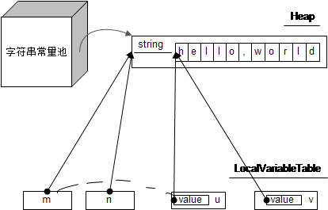
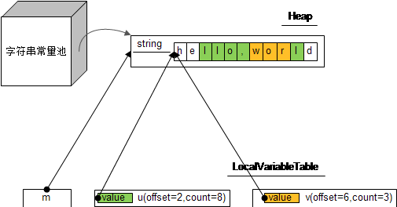
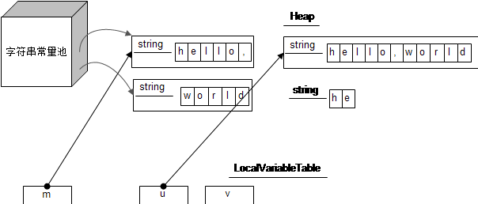
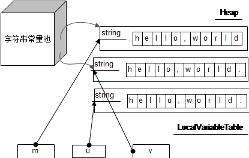
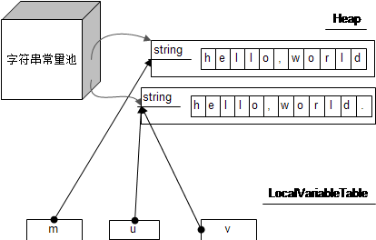
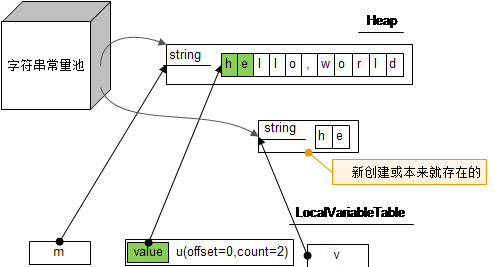
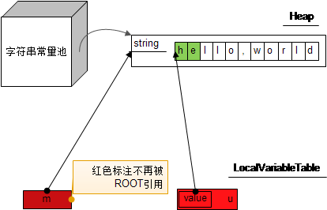

(点击上方公众号，可快速关注)
来源：蔡晓建
链接：http://mccxj.github.io/blog/20130615_java-string-constant-pool.html
String印象
String是java中的无处不在的类，使用也很简单。初学java，就已经有字符串是不可变的盖棺定论，解释通常是:它是final的。
不过，String是有字面量这一说法的，这是其他类型所没有的特性(除原生类型)。另外，java中也有字符串常量池这个说法，用来存储字符串字面量，不是在堆上，而是在方法区里边存在的。
字面量和常量池初探
字符串对象内部是用字符数组存储的，那么看下面的例子:
String m = "hello,world";
String n = "hello,world";
String u = new String(m);
String v = new String("hello,world");
这些语句会发生什么事情? 大概是这样的:
会分配一个11长度的char数组，并在常量池分配一个由这个char数组组成的字符串，然后由m去引用这个字符串。
用n去引用常量池里边的字符串，所以和n引用的是同一个对象。
生成一个新的字符串，但内部的字符数组引用着m内部的字符数组。
同样会生成一个新的字符串，但内部的字符数组引用常量池里边的字符串内部的字符数组，意思是和u是同样的字符数组。
如果我们使用一个图来表示的话，情况就大概是这样的(使用虚线只是表示两者其实没什么特别的关系):

结论就是,m和n是同一个对象，但m,u,v都是不同的对象，但都使用了同样的字符数组，并且用equal判断的话也会返回true。
我们可以使用反射修改字符数组来验证一下效果，可以试试下面的测试代码:
@Test
public void test1() throws Exception {
String m = "hello,world";
String n = "hello,world";
String u = new String(m);
String v = new String("hello,world");
Field f = m.getClass().getDeclaredField("value");
f.setAccessible(true);
char[] cs = (char[]) f.get(m);
cs[0] = 'H';
String p = "Hello,world";
Assert.assertEquals(p, m);
Assert.assertEquals(p, n);
Assert.assertEquals(p, u);
Assert.assertEquals(p, v);
}
从上面的例子可以看到，经常说的字符串是不可变的，其实和其他的final类还是没什么区别，还是引用不可变的意思。 虽然String类不开放value，但同样是可以通过反射进行修改，只是通常没人这么做而已。 即使是涉及”修改”的方法，都是通过产生一个新的字符串对象来实现的，例如replace、toLower、concat等。 这样做的好处就是让字符串是一个状态不可变类，在多线程操作时没有后顾之忧。
当然，在字符串修改的时候，会产生一个新的对象，如果执行很频繁，就会导致大量对象的创建，性能问题也就随之而来了。 为了应付这个问题，通常我们会采用StringBuffer或StringBuilder类来处理。
另外，字符串常量通常是在编译的时候就确定好的，定义在类的方法区里边，也就是说，不同的类，即使用了同样的字符串， 还是属于不同的对象。所以才需要通过引用字符串常量来减少相同的字符串的数量。可以通过下面的代码来测试一下：
class A {
public void print() {
System.out.println("hello");
}
}
class B {
public void print() {
String s = "hello";
// 修改s的第一个字符为H
System.out.println("hello"); // 输出Hello
new A().print(); // 输出hello
}
}
字符串操作细节
String类内部处理有个字符数组之外，还使用偏移位置offset和长度count， 通过offset和count来确定字符数组的一部分，这部分才是这个字符串的真正的内容。 例如，有substring这个常用方法，看下面的例子:
String m = "hello,world";
String u = m.substring(2,10);
String v = u.substring(4,7);
按照上面的说法，m,n的数据结构就如下图所示:

可以发现，m,n,v是三个不同的字符串对象，但引用的value数组其实是同一个。 同样可以通过上述反射的代码进行验证，这里就不详述了。
但字符串操作时，可能需要修改原来的字符串数组内容或者原数组没法容纳的时候，就会使用另外一个新的数组，例如replace,concat,+等操作。另外，oracle的JDK实现中，String的构造方法，对于字符串参数只是引用部分字符数组的情况(count小于字符数组长度)，采用的是拷贝新数组的方式，是比较特别的，不过这个构造方法也没什么机会使用到。
例如下面的代码:
String m = "hello,";
String u = m.concat("world");
String v = new String(m.substring(0,2));
得到的结构图如下:

可以发现，m,u,v内部的字符数组并不是同一个，有兴趣可以试验一下。
常量池中字符串的产生
常量池中的字符串通常是通过字面量的方式产生的，就像上述m语句那样。 并且他们是在编译的时候就准备好了，类加载的时候，顺便就在常量池生成。
可以通过javap命令检查一下class的字节码，可以发现下面的高亮部分(以上面代码为例):
javap -v StringTest
Compiled from "StringTest.java"
public class com.github.mccxj.StringTest extends java.lang.Object
SourceFile: "StringTest.java"
minor version: 0
major version: 50
Constant pool:
const #1 = Method #9.#28; // java/lang/Object."<init>":()V
+ const #2 = String #29; // hello,
+ const #3 = String #30; // world
...
+ const #46 = Asciz hello,;
+ const #47 = Asciz world;
...
大家不知有没有发现，上面的图中，u和v的字符数组没有被常量池里边的字符串引用到。 原因就是这些字符串(字符数组)都是运行时生成的，而常量池里边的字符串和字符数组是完整对应上的(count等于数组长度)。
即使是字符串的内容是一样的，都不能保证是同一个字符串数组。例如下面的代码:
String m = "hello,world";
String u = m + ".";
String v = "hello,world.";
u和v虽然是一样内容的字符串，但内部的字符数组不是同一个。画成图的话就是这样的:

另外有一点，如果让m声明为final，你就会发现u和v变成是同一个对象。画成图的话就是这样的:

这应该怎么解释的？这其实都是编译器搞的鬼，因为m是final的， u直接被编译成”hello,world.”了，如果使用javap查看的话，会发现下面一段逻辑:
const #2 = String #25; // hello,world
const #3 = String #26; // hello,world.
...
public void test1() throws java.lang.Exception;
Code:
Stack=1, Locals=4, Args_size=1
0: ldc #2; //String hello,world
2: astore_1
3: ldc #3; //String hello,world.
5: astore_2
6: ldc #3; //String hello,world.
8: astore_3
9: return
那么，如何让运行时产生的字符串放到常量池里边呢? 可以借助String类的intern方法。 例如下面的用法
String m = "hello,world";
String u = m.substring(0,2);
String v = u.intern();
上面我们已经知道m,n使用的是同一个字符数组，但intern方法会到常量池里边去寻找字符串”he”,如果找到的话，就直接返回该字符串， 否则就在常量池里边创建一个并返回，所以v使用的字符数组和m,n不是同一个。画成图的话就是这样的:

字符串的内存释放问题
像字面量字符串，因为存放在常量池里边，被常量池引用着，是没法被GC的。例如下面的代码:
String m = "hello,world";
String n = m.substring(0,2);
m = null;
n = null;
经过上述的操作，画成图的话就是这样的:

而经过上面的分析，我们知道像substring、split等方法得到的结果都是引用原字符数组的。 如果某字符串很大，而且不是在常量池里存在的，当你采用substring等方法拿到一小部分新字符串之后，长期保存的话(例如用于缓存等)， 会造成原来的大字符数组意外无法被GC的问题。
关于这个问题，常见的解决办法就是使用new String(String original)或java.io.StreamTokenizer类。并且在网上已经有比较广泛的讨论，大家可以去阅读一下:
Leaking Memory in Java
优化变成了忧患：String类的split方法引起的内存泄漏
结论
任何时候，比较字符串内容都应该使用equals方法
修改字符串操作，应该使用StringBuffer，StringBuilder
可以使用intern方法让运行时产生字符串的复用常量池中的字符串
字符串操作可能会复用原字符数组，在某些情况可能造成内存泄露的问题
【今日微信公号推荐↓】

更多推荐请看《值得关注的技术和设计公众号》
其中推荐了包括技术、设计、极客和IT相亲相关的热门公众号。技术涵盖：Python、Web前端、Java、安卓、iOS、PHP、C/C++、.NET、Linux、数据库、运维、大数据、算法、IT职场等。点击《值得关注的技术和设计公众号》，发现精彩！
![]()